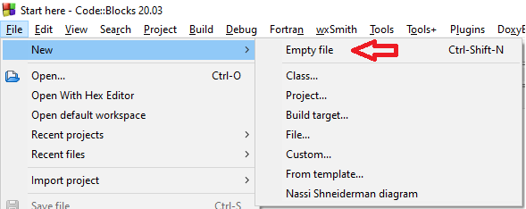
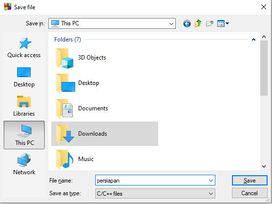
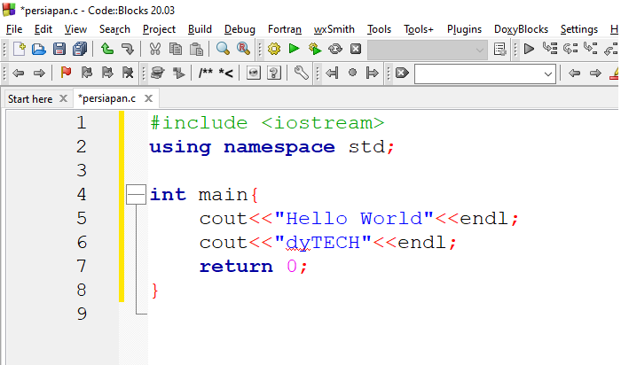
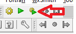
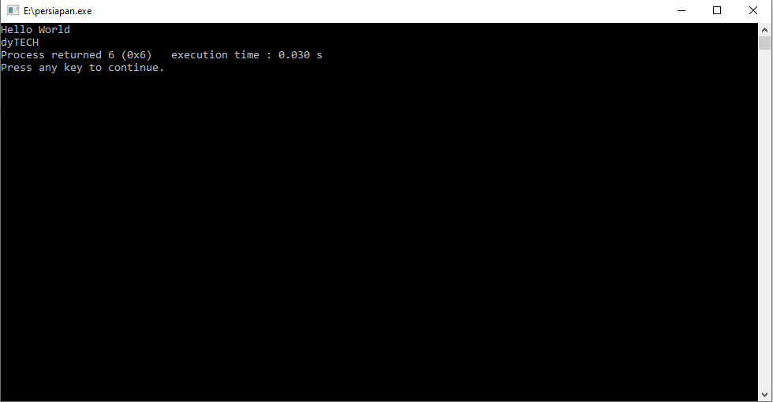

Persiapan C++
Membuat File C++
Nah setelah kita sudah selesai instalasi, mari kita simak cara membuat file C++
- Buka aplikasi Codeblocks dan measuk ke menu File > New > Empty file

- Kemudian isi nama file dengan persiapan.cpp dan tipe C/C++ files

- Setelah selesai membuat file, ketik kode program berikut.

- Setelah selesai mengetik program, tekan Build & Run untuk menjalankan program

- Berikut adalah hasilnya

Nah setelah kita berhasil membuat file C++, yuk kita lanjut materi selanjutnya ^_^